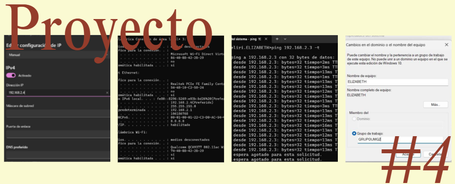
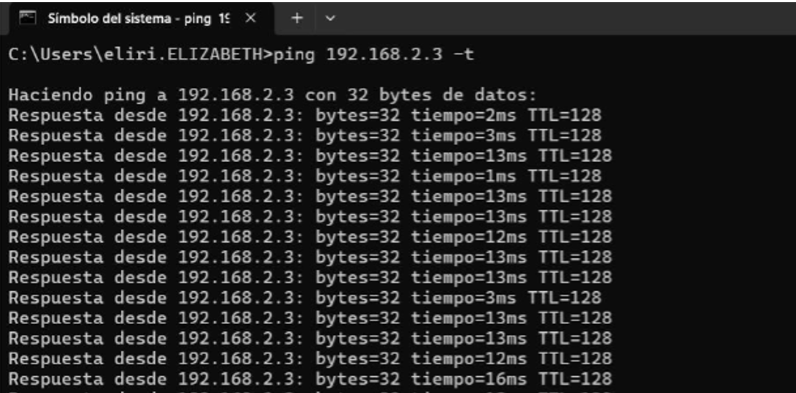

Proyecto Parcial - Configuración de una RED LAN
Este proyecto consiste en configurar una red local conectando tres computadoras a través de un switch, donde cada integrante utiliza su cable de red previamente fabricado para establecer la conexión física, luego asigna direcciones IP estáticas dentro del mismo rango para permitir la comunicación entre los equipos, verifica dicha comunicación mediante pruebas de ping, configura un mismo grupo de trabajo y nombres de equipo, y finalmente habilita el uso compartido de archivos creando una carpeta accesible en red, con el fin de demostrar que las computadoras pueden conectarse entre sí e intercambiar información correctamente.
El objetivo es interconectar tres computadoras mediante un switch configurando direcciones IP estáticas, con el fin de establecer comunicación dentro de una red LAN y permitir el intercambio de archivos y recursos compartidos entre los equipos.
El proyecto se realizó conectando tres computadoras a un switch mediante cables directos previamente fabricados con la norma T568B. Primero se conectó el switch a la energía eléctrica y luego cada computadora fue conectada a uno de los puertos disponibles del switch . Posteriormente se configuraron direcciones IP estáticas en cada computadora utilizando el rango privado 192.168.1.x y la máscara de subred 255.255.255.0 para que todos los equipos pertenecieran a la misma red.
Se realizaron pruebas de conectividad utilizando el comando ping en el símbolo del sistema para comprobar la comunicación entre las computadoras.
Luego se configuró el nombre de cada equipo y se asignó el mismo grupo de trabajo a todas las computadoras.

